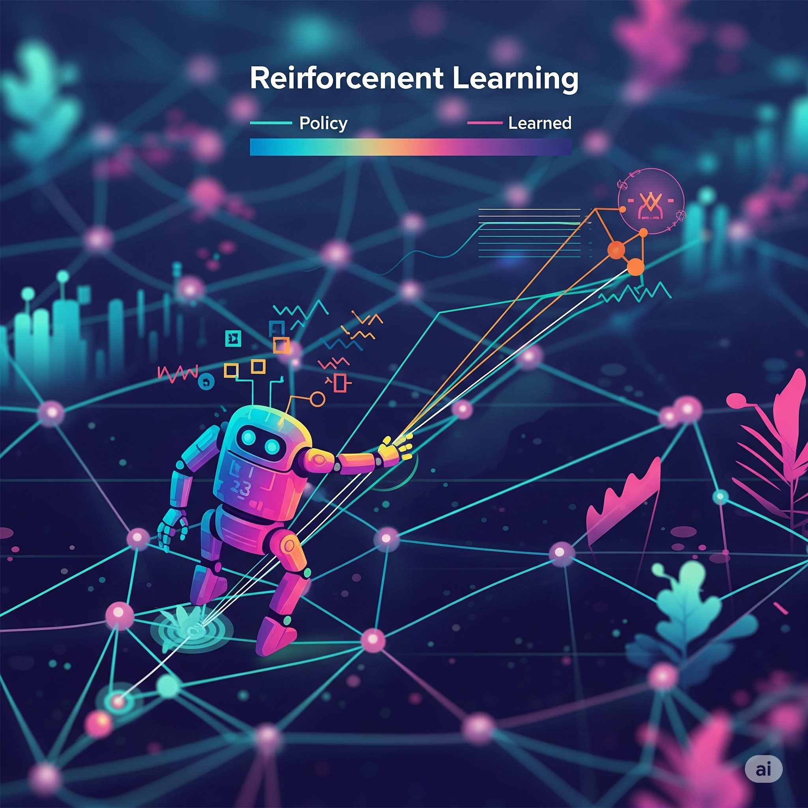

Reinforcement Learning Advancements and Applications

Reinforcement Learning (RL) is a paradigm in machine learning where an agent learns to make decisions by interacting with an environment to achieve a goal. It's about learning through trial and error, receiving rewards for desirable actions and penalties for undesirable ones.
Core Components of RL
RL systems are typically composed of a few key elements:
- Agent: This is the learner or decision-maker. It observes the environment, takes actions, and learns from the feedback it receives.
- Environment: The world with which the agent interacts. It provides states to the agent and responds to the agent's actions with new states and rewards.
- Reward System: A scalar feedback signal that indicates how well the agent is performing. Positive rewards encourage certain behaviors, while negative rewards (penalties) discourage others.
- Policy: The agent's strategy for choosing actions based on its current state. The goal of RL is to learn an optimal policy.
- Value Function: A prediction of the future reward that can be expected from a given state or state-action pair.
The agent continuously explores the environment, takes actions, observes the consequences, and updates its policy to maximize the cumulative reward over time.
Major Achievements
Reinforcement Learning has achieved remarkable successes, particularly in complex domains:
- AlphaGo: DeepMind's AlphaGo famously defeated the world champion Go player, demonstrating the power of RL in mastering complex strategic games.
- OpenAI Five: An AI system that achieved human-level performance in the challenging multiplayer video game Dota 2.
- Atari Games: Deep Q-Networks (DQNs) enabled AI agents to play a wide range of Atari video games at a superhuman level using only raw pixel inputs.
Real-World Applications
Beyond games, RL is finding increasing applications in various real-world scenarios:
- Robotics: Teaching robots to perform complex tasks like grasping objects, navigating environments, and performing dexterous manipulations.
- Game AI: Developing more sophisticated and human-like AI opponents in video games.
- Recommendations Systems: Optimizing content delivery and personalized recommendations for users.
- Autonomous Systems: Guiding self-driving cars and drones in decision-making and navigation.
- Resource Management: Optimizing energy consumption in data centers and managing traffic flow in smart cities.
The field of Reinforcement Learning is rapidly evolving, with ongoing research focused on improving sample efficiency, handling sparse rewards, and ensuring safety in real-world deployments. As algorithms become more robust and computational resources grow, RL is poised to drive innovation across numerous industries, enabling truly intelligent and adaptive systems.